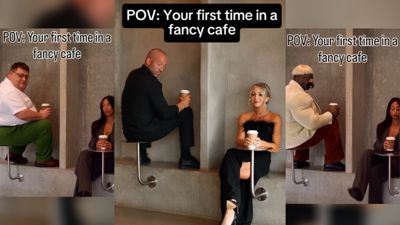
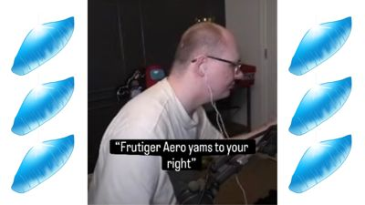

TOP 10 MEMES THIS WEEK
-

1. 'POV: YOUR FIRST TIME IN A FANCY CAFE': SITTING-ON-THE-TABLE SKIT SPAWNS AI REMIXES
Credit: image via Know Your Meme; original creators as documented there. © its owner; shown in small form for ranking and commentary. View originalWhy it ranks: IG @kevinwinnik 11M likes (fetch_social Nov 5 noon); TikTok @leehoustonx 10.9M views / 1.4M likes; @boby.biggsjohnson 5.8M; KYM 1,663 views. Yesterday's site lead. -

2. 'FRUTIGER AERO YAMS': BRAINROT CATCHPHRASE TEASING FANS OF THE GLOSSY 2000s AESTHETIC GETS A KYM ENTRY
Credit: image via Know Your Meme; original creators as documented there. © its owner; shown in small form for ranking and commentary. View originalWhy it ranks: KYM-cited TikTok @hard_plushie 9.1M views / 2.4M likes (kept; noon re-fetch no rehydration); @watosis 327K; YT LiMC ~541K; KYM 5,104 views; still on Popular/editorial. -

3. H3'S ETHAN KLEIN CHEATING ALLEGATIONS SPAWN A MEME FACTORY, PER KYM
Credit: image via Know Your Meme; original creators as documented there. © its owner; shown in small form for ranking and commentary. View originalWhy it ranks: H3 cheating-allegation meme factory still on KYM Top Entries This Month (Nov 4); event page ~17,341 views. Keep attribution framing. Nov 4 reads (10am PT): TikTok @gmcnews 592K views; Instagram @kleinhila 319K likes; YouTube 'Victim card De-Klein'd' 359K views. -

4. ANAKIN SKYWALKER BECOMES THE FACE OF GEN Z MALE RAGE
Credit: image via Know Your Meme; original creators as documented there. © its owner; shown in small form for ranking and commentary. View originalWhy it ranks: KYM Anakin Skywalker Gen Z Male Rage Memes still Popular Right Now / Top Entry This Month (Nov 4 9am); ~14,844 KYM page views. Election-night Anakin edits also hit X News. Nov 4 reads (10am PT): YouTube 'They're Not Happy About Zoomer Anakin' 543K views. -

5. MACAULAY CULKIN GOES AS THE 'THOUSAND-YARD STARE' MEME FOR HALLOWEEN
Credit: posted by @DiscussingFilm on X. © its owner; shown in small form for ranking and commentary. View originalWhy it ranks: 16.99M views / 351K likes on @DiscussingFilm (X API, Nov 5). Aged out of daily; still weekly/monthly. -
6. 'WOKE 3': MIDTERM 'BLUE SWEEP' SPAWNS SATIRICAL SEQUEL-SLANG MEMES
Credit: image via Know Your Meme; original creators as documented there. © its owner; shown in small form for ranking and commentary. View originalWhy it ranks: 3.40M views / 185K likes on @MeganBitchell's WOKE 3 post (X API, Nov 5 noon). KYM entry 2,675 views. TikTok @elionwillpower 852K views. -

7. 'CODE ROT' / 'YEP IT'S CODE ROTTED INDEED': GLITCH FILTER MEME SPREADS ON TIKTOK
Credit: image via Know Your Meme; original creators as documented there. © its owner; shown in small form for ranking and commentary. View originalWhy it ranks: KYM entry 13,901 views (pub Oct 22). Peak TikTok @tr0v0n 1.4M views; multiple 1M+ posts. LiMC explainer 931K views (6d). On KYM Popular. -

8. ALTMAN: DRAM IN HOME PCS IS 'QUITE TERRIBLE' ALLOCATION... INTERNET HIDES ITS DIMMS
Credit: posted by u/famsteve20015 on r/memes. © its owner; shown in small form for ranking and commentary. View originalWhy it ranks: #1 r/memes top-this-week and #4 top-this-month (Nov 5 ~11am PT). -
TELEGRAM'S OFFICIAL ACCOUNT: 'I CAN'T BELIEVE BILL GATES NAMED THAT COMPANY AFTER HIS PENIS'
9. TELEGRAM'S OFFICIAL ACCOUNT: 'I CAN'T BELIEVE BILL GATES NAMED THAT COMPANY AFTER HIS PENIS'
Credit: posted by @telegram on X. © its owner; shown in small form for ranking and commentary. View originalWhy it ranks: Telegram official joke that Bill Gates named Microsoft after his penis. X API 12,031,545 views / 136,496 likes (Nov 5 ~2PM PT). -

10. JIREN DANCES TO 'I'M SO IN LOVE WITH YOU'
Credit: image via Know Your Meme; original creators as documented there. © its owner; shown in small form for ranking and commentary. View originalWhy it ranks: KYM cites 2.1M views; KYM Weekly Meme Roundup (Oct 30). Nov 4 reads (10am PT): TikTok @notmemetime 3.6M views; YouTube 'I'm so in love with you' 95K views.